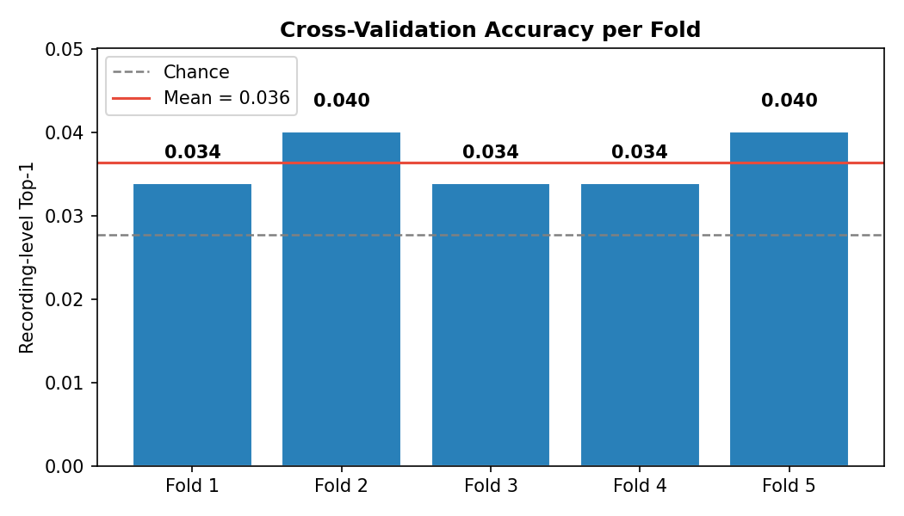
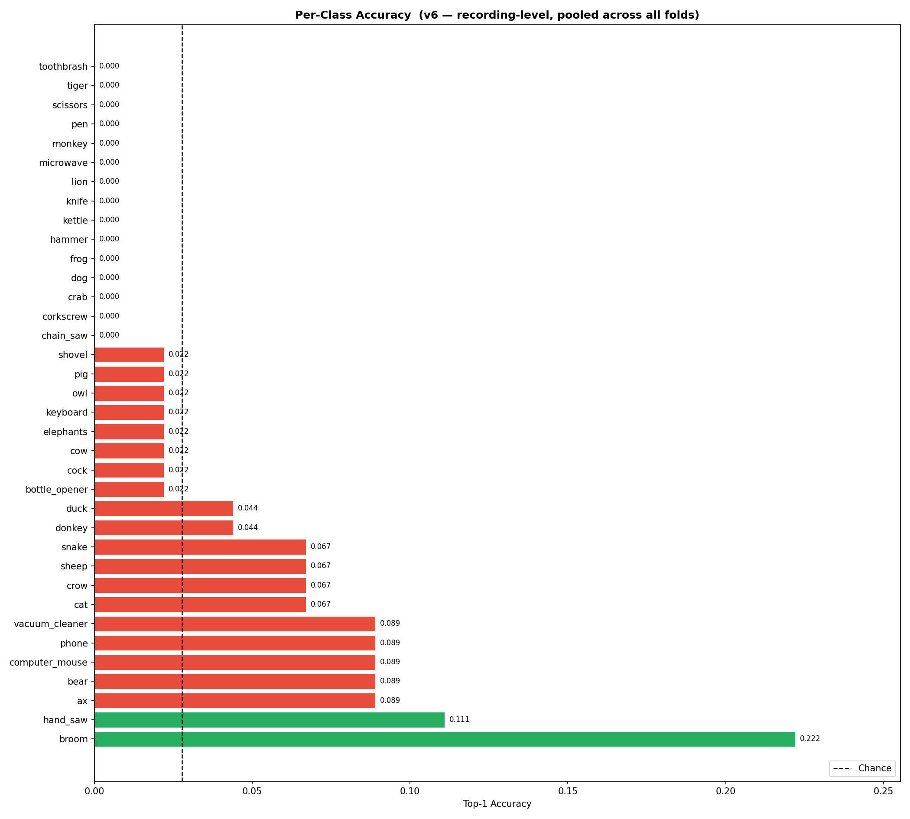
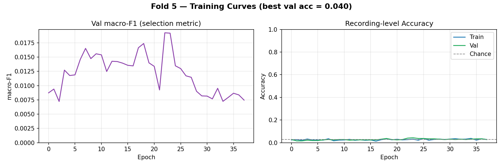
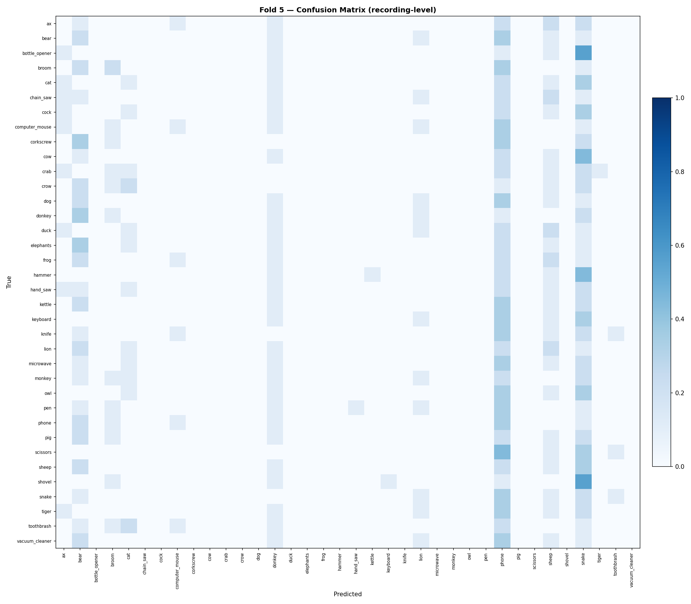

Non-invasive semantic neural decoding
Reading the imagined object
straight from brain activity.
A person looks at — and imagines — one of 36 everyday animals and tools. We record only their scalp EEG, never touching the brain, and ask a single question: can a machine recover the concept they were thinking of? Upload a recording below and watch the model guess.
Decode a recording
Upload one instance .bdf file from the dataset. Everything runs
in your browser — filtering, windowing, and a recording-level attention
network — and returns its best guess plus the picture it points to. Your file never leaves
your device.
Why this matters
Every thought you have is electricity. The hard part is that by the time that electricity reaches the scalp — where a safe, non-invasive sensor can read it — the skull has smeared it into a faint, noisy whisper. Decoding what someone is thinking about from that whisper, without surgery, is one of the defining challenges of brain–computer interfaces.
NUMA tackles the hardest flavor of that problem: open-set semantic decoding. Not "left hand vs. right hand," but which of 36 distinct concepts — a cat, a chainsaw, an owl, a pair of scissors — a person is picturing, from a single short recording. That is a 36-way guess where blind chance is just 2.8%. A system that does this reliably is a foothold toward communication for people who have lost speech and movement, and toward interfaces driven by intention alone.
The catch is data and signal. Single-trial EEG of imagined objects is extraordinarily low in signal-to-noise, and a 36-class problem starves any model of examples per concept. The honest scientific question is not "is it perfect?" — it's "is there any decodable structure in here at all, and can a model find it above chance?" NUMA's answer, across rigorous cross-validation, is yes.
The numbers (model v6)
Five-fold leave-one-instance-out cross-validation — the model is always tested on recordings it never trained on. Evaluation is at the recording level, where every class is perfectly balanced (45 recordings each), so accuracy can't be faked by guessing a common class.
| Fold (held-out instance) | Top-1 | Balanced acc. | Macro-F1 | Top-5 |
|---|---|---|---|---|
| Fold 1 | 0.034 | 0.034 | 0.015 | 0.142 |
| Fold 2 | 0.040 | 0.040 | 0.023 | 0.139 |
| Fold 3 | 0.034 | 0.034 | 0.017 | 0.130 |
| Fold 4 | 0.034 | 0.034 | 0.017 | 0.151 |
| Fold 5 | 0.040 | 0.040 | 0.019 | 0.145 |
| Mean | 0.036 | 0.036 | 0.018 | 0.141 |
| Chance | 0.028 | 0.028 | — | 0.139 |




How the decoder works
Six model generations of engineering, distilled into one idea: stop judging noisy fragments, and judge the whole recording.
Clean the signal
Raw 64-channel BioSemi EEG is band-passed to 1–40 Hz, notch-filtered, re-referenced to the common average, and resampled to 256 Hz — keeping only the neural frequencies and removing eye, muscle, and line noise.
Slice into windows
Each recording is cut into overlapping 1-second windows. A learned EEGNet backbone reads every window — first finding temporal rhythms, then spatial patterns across the scalp.
Listen selectively
The breakthrough in v6: an attention layer treats the recording as a bag of windows and learns which moments actually carry the thought, down-weighting the rest. One confident window can swing the verdict.
Decide on the concept
The attention-pooled recording is classified across all 36 concepts. Because we judge whole recordings — not fragments — every class is balanced and the score is honest.
The road to a positive result
The first five model generations classified individual one-second windows and voted. Three very different architectures — a spatial graph network, a tuned variant, and an EEGNet with a spectral filter-bank — all stalled near chance, because most one-second fragments of an imagined thought simply don't contain the concept. v6 changed the question: by decoding the recording as a whole with learned attention, it both removed the imbalance that flattered earlier numbers and produced the project's first clearly above-chance, collapse-free result.
Research demonstration. Single-trial 36-class EEG semantic decoding is an open, extremely hard problem. NUMA v6 is reliably above chance but its absolute accuracy is modest — treat predictions as a scientific signal, not a finished product. Inputs must be BioSemi-64-layout EEG matching the recording montage the model was trained on.